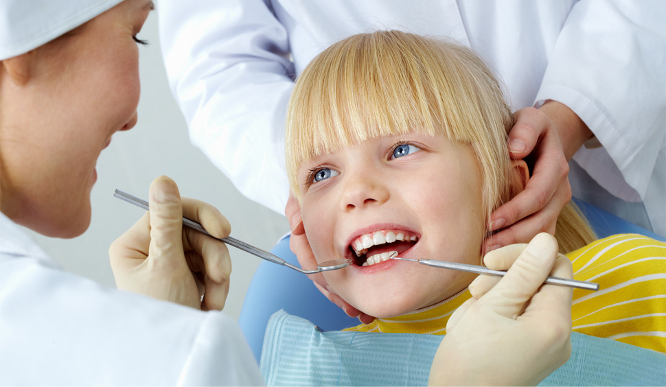
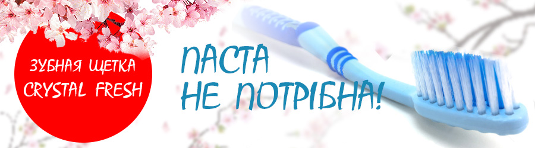
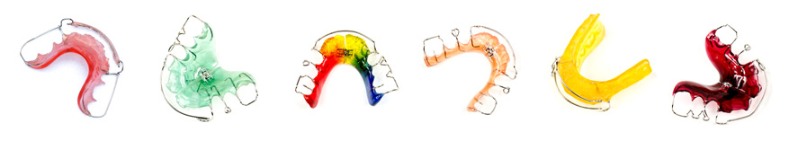
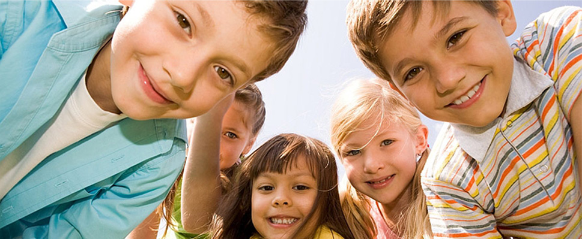

Наше кредо – индивидуальный подход к каждому маленькому пациенту, создание комфортной обстановки с целью преодоления психологического напряжения.

Новинка с Японии! Революція догляду за ротовою порожниною!

Зубна щітка з напиленням натуральної кераміки
Природна кераміка, якою покриті щетинки зубної щітки - це кварцовий тип сланцю, що видобувається тільки в одному місці на планеті - в префектурі Аїті, Японія.
В процесі чистки, частки натуральної кераміки на щетині зубної щітки утворюють негативні іони, які м'яко видаляютть наліт і плями на зубах, повертаючи їм природний блиск і здоровий вигляд. Також іони нормалізують кислотність в ротовій порожнині та усувають неприємний запах з рота.
Чому варто купити зубну щытку Crystal Fresh:
Вже на 2-ий день ваші зубипридбають блиск;
На 3-7 день зникне застарілий наліт;
Нормалізація кислотності в ротовій порожнині;
Абсолютно безпечна для емалі;
Зручно брати з собою в подорожі.
Достатньо користуватися щіткою 2 рази в день, щоб Ваші зуби були здоровими, а посішка яскравою.
Детская стоматология «Киндер»
В нашем стоматологическом кабинете ведется прием детей разных возрастов, начиная с самых ранних периодов.
Врач терапевт высшей категории ведет прием с привлечением и помощью родителей, с просмотром мультфильмов, консультируя и поясняя правила профилактики и гигиены полости рта.
Врач – ортодонт высшей категории производит осмотр детей на наличие правильного прикуса, определяя период начала ношения ортодонтического аппарата , брекет систем, а также правила гигиены и ухода за полостью рта ребенка и аппаратов в период ортодонтического лечения.
Стоматология для родителей
Деткам необходимо проходить осмотр у стоматолога один раз в четыре- шесть месяцев , особенно в период интенсивного роста организма. При записи на прием указывайте, что вы посещаете доктора первый раз. Первое посещение для самых маленьких пациентов должно сводится к экскурсии по кабинету и знакомству с врачом. Это даст возможность ребенку привыкнуть к обстановке , покататься на стоматологическом кресле посмотреть мультик. При следующем посещении ребенок безбоязненно дает возможность осмотреть его, полечить. Доктор дает полную консультацию родителям о состоянии полости рта ребенка.
Підготовка дитини до відвідування лікаря-стоматолога
Прорізування зубів – фізіологічний процес що, як правило, не супроводжується серйозними змінами в організмі. Проте у деяких дітей може спостерігатися незначне підвищення температури тіла, зниження апетиту, дратівлива поведінка.
У тимчасовому прикусі 20 молочних зубів.
Термін прорізування молочних зубів
перші різці – 6-8 місяців
другі різці – 8-12 місяців
ікли – 16-20 місяців
перші жувальні зуби – 12-16 місяців
другі жувальні зуби – 20-30 місяців.
В період з 2,5-3 років закінчується формування молочного прикусу.
Термін прорізування постійних зубів
Щелепа
Зуб
Термін прорізування
Нижня
1
6-7 років
2
7-8 років
3
10-12 років
4
8-9 років
5
11-12 років
6
5-6 років
7
12-13 років
8
Різний починаючи з 14 років
Щелепа
Зуб
Термін прорізування
Верхня
1
7-8 років
2
8-9 років
3
11-13 років
4
9-10 років
5
11-12 років
6
6-7 років
7
12-14 років
8
Різний починаючи з 14 років
Перше відвідування дитини лікаря стоматолога повинно бути в 1 рік, тому з раннього віку дітей слід готувати до регулярного відвідування стоматолога. У нашому кабінеті застосовується покроковий метод лікування зубів у дітей.
Рекомендації батькам
Познайомтеся з лікарем.
Розкажіть лікарю про особливості вашої дитини.
Готуючи дитину вдома, ні в якому разі не розповідайте їй про свій негативний досвід. В своїй сім’ї взагалі не треба розповідати неприємні та страшні історії про відвідування стоматолога. Діти чують та відчувають набагато більше ніж дорослі звикли думати.
Уникайте фрази з негативним змістом: не можна казати:? «не буде боляче», «не бійся», «не буде уколів».
Пам’ятайте, що другого шансу залишити у дитини, перше враження про стоматологію у Вас не буде. Спробуйте зробити так, щоб враження залишилось позитивне, інакше страх перед стоматологами у дитини залишиться на все життя.
Потрібно приводити дітей завчасно на профілактичний огляд, а не тоді, коли зуб вже болить. Легше проблему попередити, ніж лікувати зуб, до якого неможливо торкатися, не спричинивши біль.
Розкажіть про скорий візит до стоматолога в позитивному ключі мовою дитини: «ми йдемо перевірити зубки у стоматолога: чи всі виросли, чи немає там карієсу (мікробів, черв’ячків), нам дадуть подарунки».
Заздалегідь купіть бажаний подарунок для дитини, і передайте його стоматологу. Після закінчення огляду лікар презентує дитину.
Лікар в очах дитини повинен бути справжнім «супергероєм», який визволяє усіх малюків від злих бактерій, що знаходяться в ротовій порожнині. Покажіть мільтфільм за темою.
Знайомство зі стоматологом не бажано починати з лікування. Перше відвідування потрібне для того, щоб лікар і дитина познайомились. Тому, якщо немає гострих процесів в зубах, краще якщо лікар просто поспілкується з дитиною, покаже їй кабінет, бажано щоб перший візит закінчився звичайною гігієною, тобто лікар дитині почистив зуби.
Якщо лікар, оглянувши дитину, каще що необхідне лікування, то наступне відвідування краще зробити через день-два після знайомства. Якщо зуби здорові, то наступний плановий візит буде через 3-4 місяці.
Не показуйте своє хвилювання. Візит до стоматолога повинен бути плановою подією, невід’ємною частиною буденного життя.
Якщо зуб почав турбувати, переконайте дитину, що лікар обов’язково допоможе, зуб перестане боліти, його помиють, почистять, видмуть мікробиків, що кусаються.
Якщо Вам вдається вмовити дитину, хай спробує налагодити з нею контакт лікар або асистент. Іноді для цього прохають батьків вийти з кабінету, після чого дитина веде себе зовсім по іншому. Лікар та дитина знаходять спільну мову.
Не потурайте дитині, не залякуйте, не загрожуйте їй, не обіцяйте того, що потім не зможете виконати, заради згоди на маніпуляції.
Візит до стоматолога повинен бути приємний для Вас і вашої дитини!
Ольга Шешукова
д.мед.н., професор,
завідувач кафедри
дитячої стоматології
Лариса Логвіна
лікар-стоматолог дитячий
Профилактика и лечение кариеса молочных и постоянных зубов.
Индивидуальный подход к составлению плана профилактических мероприятий по сохранению здоровья полости рта ребенка:
рекомендации по питанию;
подбор предметов и средств гигиены в зависимости от возраста и стоматологического статуса ребенка;
правила ухода за полостью рта с момента появления зубов до трех лет и после;
проведение реминерализирующей терапии (обработка зубов фтор или кальцесодержащими препаратами);
герметизация фиссур молочных и постоянных зубов ( по показаниям).
Проведение профессиональной чистки зубов , рекомендации в подборе зубных паст.
Лечение кариеса молочных и постоянных зубов с применением современных пломбировочных материалов.
Лечение молочных и постоянных зубов с использованием цветных пломб, стеклоиномерных материалов химического отверждения , фотополимеров и компомеров.
Молодым мамам : рекомендации по уходу за полостью рта ребенка до прорезывания первых зубов.
Ортодонтия
Профилактика ортодонтических заболеваний : назначение «миогимнастики», устранение вредных привычек с самых ранних возрастов, индивидуальные рекомендации родителям.
Изготовление разноцветных ортодонтических аппаратов с применением современных ортодонтических пластмасс, цвет по желанию ребенка.
Фиксация брекет систем в постоянном прикусе ( брекеты металл, керамика , сапфиры)
Установка ретейнеров и капп после окончания ортодонтического лечения


Будьте здоровы и внимательны к своим детям! С уважением стоматологический кабинет «Киндер»